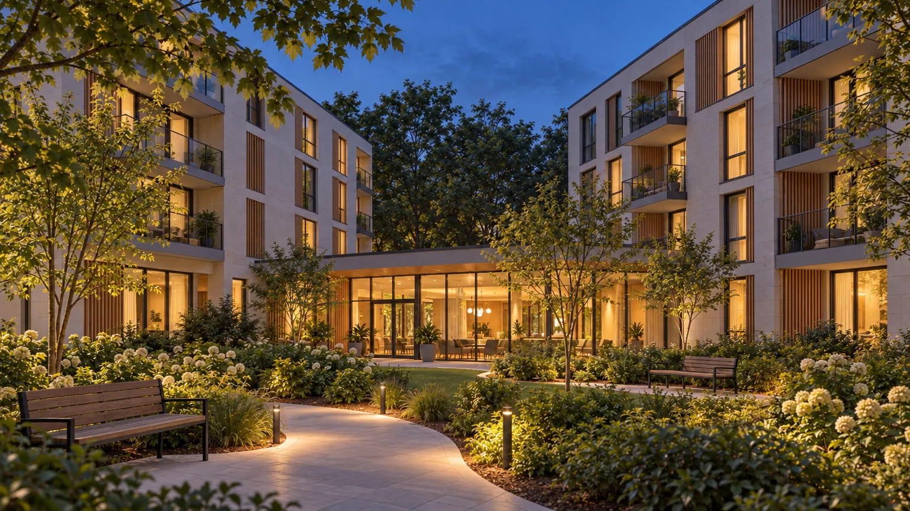
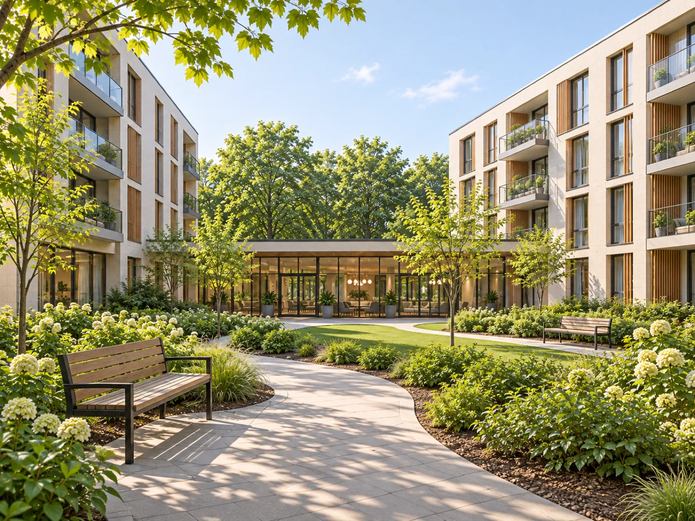
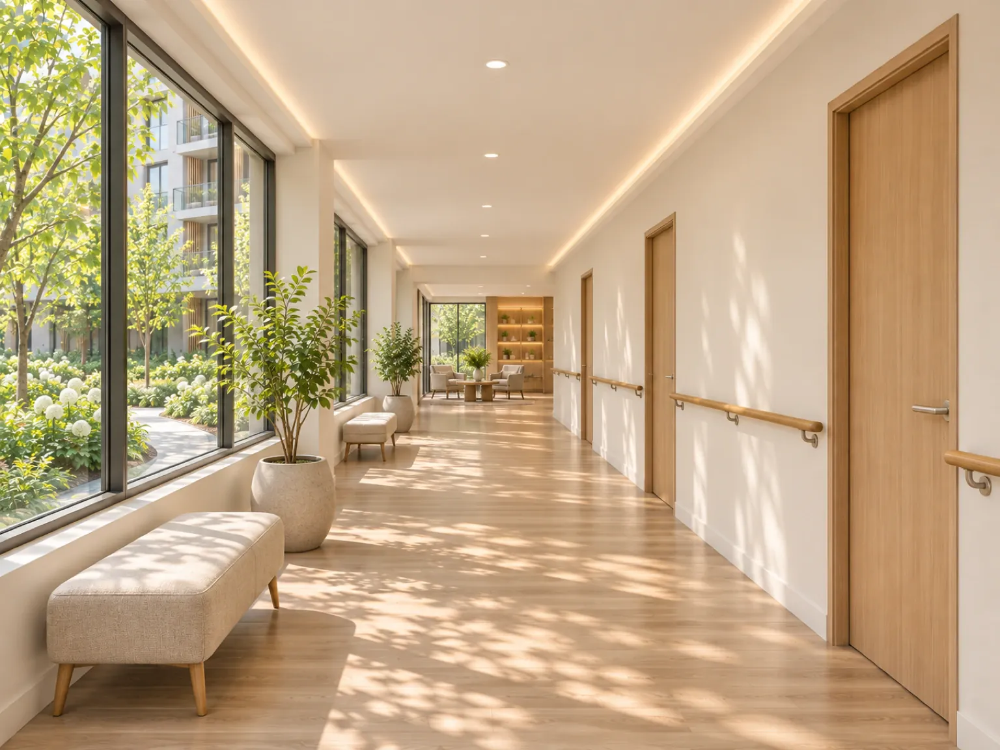

시설 소개
두 동의 4층 건물이 1층 공용 공간으로 이어져 있어요.

Evenstay는 4층 건물 두 동(A동, B동)이 1층 공용 공간으로 이어져 있어요. 1층에는 로비와 프런트, 식당, 라운지, 도서 공간이 있고, 숙소는 2층부터 4층까지예요. 두 동 사이에는 산책로와 작은 텃밭이 있는 안뜰 정원이 있어요.




함께 쓰는 방은 Evenstay 홈에서 비어 있는 시간을 골라 예약하세요. 프런트에 말씀하셔도 직원이 대신 예약해 드려요.


호출벨
방마다 손 닿는 곳에 호출벨이 있어요. 누르시면 당번 직원에게 바로 알려요.
침대 센서
동의하신 분 방에만 달아요. 영상이나 소리는 남기지 않아요.
1층 프런트
궁금하신 점이나 부탁하실 일은 1층 프런트에 말씀해 주세요.
엘리베이터
두 동 모두 엘리베이터로 오르내리실 수 있어요.
문턱 없는 복도와 손잡이
숙소 층 복도에 문턱이 없고 벽을 따라 손잡이가 있어요.
넓은 문
숙소 문이 넓어 드나드시기 편해요.
궁금하신 점이 있으면 상담을 신청해 주세요. 숙소와 비용은 상담 때 안내해 드려요.